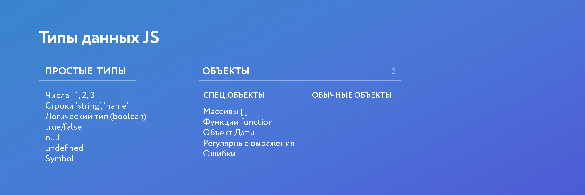

Для того, чтобы код был более читабелен и с ним было проще работать (как самому, так и другим разработчикам) необходимо соблюдать некоторые стилистические правила. Вот список основных правил:
В JavaScript существовало 6 типов данных. С приходом нового стандарта появился 7-й тип:
- var number = 5; - число
- var string = "Hello!"; - строка
- var sym = Symbol(); - символ
- var boolean = true; - булевый тип данных (может быть либо true, либо false)
- null; - тип данных null
- undefind; - неопределенный тип данных
- var obj = {}; - объект
console.log(4/0);
Данная конструкция выдаст значение infinity
console.log('string'+9);
Данная конструкция выдаст значение NaN (Not A Number), т.к. мы пытаемся сложить два разных типа данных (строку и число).
Если мы попытаемся вывести необъявленную переменную
console.log(something);
то закономерно получим тип данных null. Если же мы объявим предварительно данную переменную, но не укажем ее значение
let something;
console.log(something);
то получим тип данных undefined.
Работа с типом obj
let persone = {
name: "John",
age: 25,
isMarried: false
}
Мы можем вывести конкретное свойство объекта обратившись к нему по имени:
console.log(persone.name);
либо по имени, но в квадратных скобках (например для случаев, когда имя слишком громоздкое):
console.log(persone[0]);
Также есть частный случай объектов - массив:
let arr = ['plum.png','orange.jpg','apple.bmp'];
Для обращения к элементам массива:
console.log(arr[2]);

Для проверки на тип данных используется оператор typeOf():
let string = "Строка";
console.log(typeof(string));
Мы можем общаться с пользователем при помощи простых высплывающих уведомлений:
alert("Hello World!");
или
confirm("Are you here?");
К слову мы можем также записывать ответ пользователя (true или false):
let answer = confirm("Are you here?");
Также есть команда, которая дает пользователю ввести свой ответ:
prompt("Есть ли вам 18?");
Также в этом всплывающем окне мы можем дать пользователю подготовленный вариант ответа, например:
prompt("Есть ли вам 18?","Да");
Среди всех операторов в JS особняком стоит оператор сложения +. Например при сложении двух строковых типов данных или при сложении числа со строкой этот оператор производит объединение (конкатинацию) строк. Например
console.log("arr" + " - object");
console.log(4 + " - object");
Мы получим значения
"arr - object"
"4 - object"
Но в случае, если мы перед строкой поставим знак +, то получим число
Существует 2 типа инкремента/декремента - префиксная и постфиксная. Префиксная (++i/--i) - возвращает уже измененное значение, а постфиксная (i++/i--) - старое
Интересен также оператор, который выражается знаком % - он возвращает остаток от деления двух чисел:
console.log(5%2);
Смотрим, изучаем и учимся юзать GIT
А также в дополнение - алиасы и шорткаты в Linux
Условия чаще всего записываются при помощи операторов if else. Эти операторы превращают любые выражения в них в булевые значения (true или false).
let a = 2 + 2;
if (a == 4) {
console.log("It's true!");
} else {
console.log("It's false");
}
Также могут быть конструкции с промежуточными условиями которые записываются при помощи оператора else if:
let a = 50;
if(a < 50) {
console.log("It's too little!");
} else if(a > 50) {
console.log("It's too many!");
} else {
console.log("It's true!");
}
Условный (тернарный) оператор - единственный оператор в JavaScript, принимающий три операнда. Он часто используется в качестве укороченного варианта условного оператора if. Например условие из первого примера мы можем записать в виде тернарного оператора:
let a = 2+2;
(a == 4) ? console.log("It's true!") : console.log("It's false");
Т.е. до оператора ? мы записываем условие, после него записываем действие, которое происходит при выполнении этого условие, а затем, после оператора : записываем действие, которое происходит, если условие ложно.
К слову, название тернарный у оператора неслучайно. Он так называется потому, что в нем учавствует 3 аргумента. Если бы аргументов было бы 2 (например 2+2), то он бы назывался бинарным. Операторы, которые принимают 1 аргумент, называются унарными (например инкримент/декримент).
Оператор if else не всегда удобен ввиду своей громозскости. Поэтому более элегантным оператором для проверки нескольких условий служит оператор switch. Пример его использования:
let a = 50;
switch (a) {
case a < 50:
console.log("It's too little!");
break;
case a > 50:
console.log("It's too many!");
break;
case 50:
console.log("It's true!");
break;
default:
console.log("Something wrong with it!");
break;
}
Ключевое слово break необходимо, чтобы сбросить цикл проверки условий. Если его не будет, то все команды (case) будут выполняться одна за другой без остановки. Команда default нужна для выполнения действия по-умолчанию (если ни одно из условий не было выполнено). Эта команда необязательна.
Также стоит обратить внимание на 3-е условие (проверка на точное соответствие). В другом случае мы прописали оператор ==, но в случае с case надо записывать именно так.
Самый простой из циклов - цикл while. Он проверяет условие, заданное в скобках и при его выполнении (true) выполняет определенные действия:
let num = 0;
while(num < 5) {
console.log(num);
num++;
}
Т.е. при входе в каждую итерацию цикла проверяется правдивость заданного условия. Если же нам нужно провериь условие после завершения итерации цикла, используется конструкция do while:
do {
console.log(num);
num++;
}
while (num < 5)
Соответственно в этом случае сначала выполняются действия, заданные в цикле, а на выходе из каждой итерации проверяется условие цикла.
Пожалуй наиболе часто используемый цикл - цикл for:
for(let i = 0; i < 5; i++) {
console.log(i);
}
Может случится такое, что при определенном условии нам потребуется завершить выполнение цикла (например, если i = 3). Для этого используется оператор break:
for(let i = 0; i < 5; i++) {
if(i == 3) {
break;
}
console.log(i);
}
Если же нам нужно пропустить некоторые итерации цикла, то можно использовать оператор continue
for(let i = 0; i < 5; i++) {
if(i == 3) {
continue;
}
console.log(i);
}